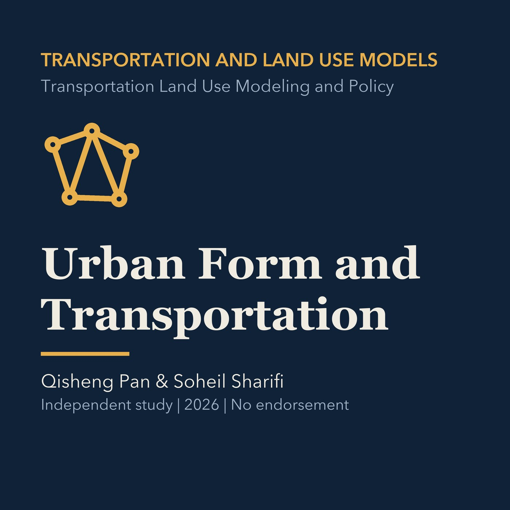

EPISODE 04
Urban Form and Transportation Interaction
Examines density, centers, networks, accessibility, job matching, and travel patterns, followed by a Torrance application.

- Stable GUID
a63bf568-ecae-5d24-9275-54ef1aa226f2- Release
- transportation-land-use-modeling-v2026.2
- SHA-256
04042914a5cefd24b5a674ca3eb209811418b80ce958a6ce535987f266edc316